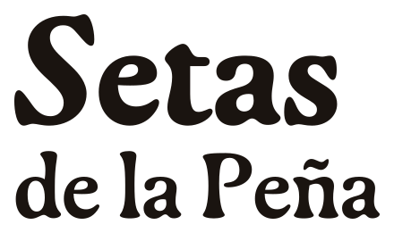

Conoce la seta.
Imagina el plato.
Elige la seta por su sabor y textura. Después, busca una preparación para tu carta o tu casa.



Conoce la seta.
Imagina el plato.
Una identidad para reconocer el ingrediente, imaginar cómo cocinarlo y consultar lo necesario para llevarlo a la mesa. La información comercial se confirma para cada pedido.
Firmas oficiales en contornos. Gaya Bold para «Setas» y Medium para «de la Peña».

Respetar el área de protección: media altura de la S, además del margen del SVG.
No deformar, rotar, sombrear ni incorporar grabados dentro de la firma.
Verificar la licencia comercial de Gaya antes de usar los archivos fuera de la revisión interna.
La tipografía establece jerarquía; el color identifica la marca y acompaña la lectura.
La textura también es un ingrediente.
Hericium erinaceusElige una especie por su sabor y textura. Explora preparaciones para tu cocina.
SP. 001 · TENJO / CUNDINAMARCA
#FAF8F3#1A1410#2E3B2F#B8614D#4E6A7APapel y tinta sostienen la composición. Musgo identifica; terracota y pizarra se reservan para acentos. Para texto de acento usar el token accesible, no terracota clara.
Las ilustraciones muestran especies y posibles preparaciones. No certifican cosechas, inventario ni recetas probadas.

Siluetas completas, detalles de la especie, nombre común y nombre científico en itálica.

Platos completos, ingredientes reconocibles y un vínculo concreto con una receta.
Composiciones de referencia para revisar jerarquía. No contienen datos de venta ni de producción.
El nombre y la especie primero. Requiere información real, revisión legal y prueba física antes de imprimir.
Cuéntanos qué quieres preparar y lo que necesitas consultar.
La conversación empieza en el uso culinario y solicita cinco datos concretos.

Adaptación pendiente de prueba en cocina.
Un plato ilustrado, una preparación identificable y estado de prueba junto al contenido.
Usar frases directas, nombres precisos y avisos cerca de los datos que todavía deben confirmarse.
Imágenes. Distinguir «Ilustración de especie», «Ilustración culinaria» y fotografía documental. Una lámina no acredita la procedencia de un lote.
Promesas. No declarar certificaciones, propiedades medicinales, abastecimiento regular ni cosechas concretas sin respaldo verificable.